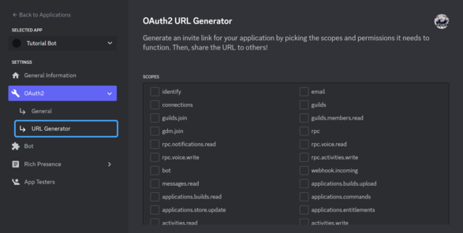

Now that we've created a bot (or you've created a bot) we need to add it to our server to use it. We can do
this from the discord developer portal. Go to the developer portal and then select the application you want
to add to your server:
Next select the Oauth2 button in
the sidebar and from the dropdown menu pick url generator:

From here we need to pick a scope for our application. We made a bot in this tutorial so we will select
the bot option. This will open a new menu where you can select permissions. As I said in the tutorial we
will just select the administrator permission as we know what the bot does and we're not using it in random
people's servers. This will generate a link at the bottom:
Copy this linkand paste it in a new tab. This will bring you to a page like this:

Then you just select the server you want to add it to and authorize
it. Note that you will need administrator permissions in that server to add it. That's it, now the bot is in
your server and you can run your script and test it out.
Just because we used the administrator permission for our own server doesn't mean it's a good fit for our bot.
In fact, no popular discord bots have this permission. One major reason for that is if you didn't make the
bot yourself, you're not sure if you can totally trust it. Therefore people would rather download a bot that
doesn't instantly have access to all of the server's features. If you are making a bot for public use you need
to learn how to choose permissions. Here is the full list of permissions:
As you can see they are divided into 3 categories: general, text,
and voice. The voice permissions define what the bot can do in voice channels, while the text section is for
text channels. The general section includes everything else including all kinds of server administration
permissions. The two important ones for our bot would be the slash commands permission and the send
messages permission. The first one allows people in the server to see and use our commands, while the
second one allows us to reply to these commands with messages. If you're not sure what permissions to
give your bot, go through your code and check if you use each one. If you don't, it's better to just leave
that permission off.